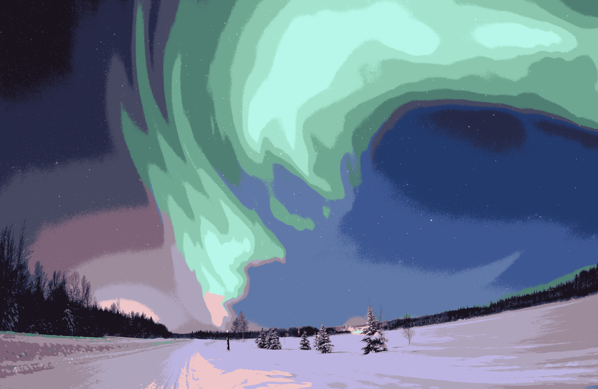

Image Segmentation
Graphical representation of the tonal distribution in a digital image
El histograma es una representación gráfica de la distribución de los distintos tonos de una imagen. Esta es posible gracias a la distribución de pixeles de una fotografía con base a su luminosidad.
Esta herramienta puede ayudarnos a controlar la exposición en nuestras fotos, así como para corregir los colores.
El histograma representa, en el eje horizontal, la distribución de sombras, tonos medios y luces (de izquierda a derecha). En el eje vertical, el número de pixeles de la imagen que tienen tal luminosidad.
De este modo, la superficie de cada una de las barras que forman el histograma refleja la mayor o menor frecuencia de pixeles de la imagen que tienen cada valor de luminosidad.

Es importante aclarar que un histograma no indica si la imagen esta mal, simplemente ayuda al observador como herramienta para que exponga la imagen como lo desea, por ejemplo el histograma nos permite identificar algunos aspectos como:
| Histograma | Caracteristicas |
|---|---|
 |
Sombras o zonas oscuras
Imagen con muchas zonas en sombra o gran parte en negro, generalmente tiene un pico en el extremo izquierdo del histograma. |
 |
Sombras Palidas
Imágenes pálidas, sin zonas oscuras, No hay zonas quemadas porque no hay un pico en la derecha. |
 |
Contraluz
Para imagenes en contraluz el histograma tiene forma de U, mostrando pocas zonas grises. |
 |
Tonos Apagados
Puede observarse que la imagen está oscura, el histograma tiende a desplazarse a la izquierda . |
 |
Distribucion Homogenea
En una imagen homogénea el histograma se distribuye a lo largo . Al no haber zonas quemadas ni excesivamente oscuras. |
Podemos identificar sobreexposición de la luz y zonas quemadas, entre otras más. Esta información está basada
en el artículo de referencia sietefotografos.com
La segmentación de imágenes es el proceso de dividir una imagen digital en múltiples segmentos. El objetivo de la segmentación es simplificar y / o cambiar la representación de una imagen en algo más significativo y más fácil de analizar.
La segmentación de imágenes se utiliza normalmente para localizar objetos y límites (líneas, curvas, etc.) en imágenes. Más precisamente, la segmentación de imágenes es el proceso de asignar una etiqueta a cada píxel de una imagen de manera que los píxeles con la misma etiqueta compartan ciertas características.

Image of Polarlicht . Source: Image Segmentation Wikipedia, the free encyclopedia.
La segmentacion de imagenes aplicada para el ejemplo es basada en el histograma, usando el histograma de imagen en escala de grises, para una facilidad en la seleccion de la zona a segmentar. la informacion de la segmentacion esta basados en Image SegmentationComandos por Teclado
| Tecla | Luminancia | Expresion |
|---|---|---|
 |
Original | (R,G,B) |
 |
Media Aritmetica | I = Avg(R,G,B) |
 |
Componente mas grande | M = Max(R,G,B) |
 |
Rango Medio | L = (max(R,G,B)+min(R,G,B))/2 |
 |
Luma Y601 | Y601 = 0.2989*R + 0.5870*G + 0.1140*B |
 |
Luma Y240 | Y240 = 0.212*R + 0.701*G + 0.087*B |
 |
Luma 709 | Y709 = 0.2126*R + 0.7152*G + 0.0722*B |
 |
Luma 2020 | Y2020 = 0.2627*R + 0.6780*G + 0.0593*B |
La segmentacion aplicada anterirormente, se hace basado unicamente en el histograma generado por escala de grises, por lo cual al seleccionar la seccion a segmentar
podemos observar, como unicamente se pintan los pixeles de la imagen que se encuentran dentro de ese rango, y los que se encuentran fuera de ese rango, no son mostrados.
Adicionalmente con esto podremos observar cuales son las secciones mas claras o las mas oscuras de la imagen, dependiendo de el rango de segmentacion seleccionado y por
ultimo nos permite observar a que pueden deberse los picos en el histograma, mostrandonos su representacion en la imagen misma.